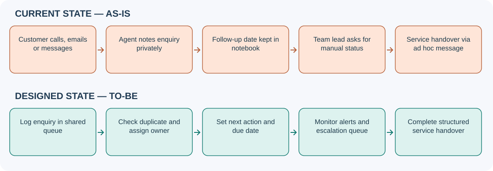

Business problem
Customer enquiries arrived through email, telephone and messaging, and agents tracked activity in personal notes or spreadsheets. Team leaders had limited visibility of who owned each lead, when the next follow-up was due and whether a service request had been handed over.
Scope and objective
Business objective: Provide a shared source of truth for enquiries and follow-ups, with clear accountability and measurable customer-response workflows.
Included: Manual enquiry registration, duplicate detection, lead status and ownership, next-action dates, reminders, escalation, service handover checklist, audit trail and funnel reporting.
Not included: Full email/WhatsApp API integration, automated quotation pricing, billing, AI lead scoring, phone recording and a deployed production CRM.
Process analysis
Current-state (AS-IS) versus designed future-state (TO-BE) workflow from the completed case-study documents.

Selected functional requirements
| ID | Capability | Priority |
|---|---|---|
| CRM-FR-01 | Enquiry intake | Must |
| CRM-FR-02 | Duplicate warning | Should |
| CRM-FR-03 | Ownership | Must |
| CRM-FR-04 | Lead stage | Must |
| CRM-FR-05 | Follow-up queue | Must |
| CRM-FR-06 | Escalation | Should |
BA evidence and work products
Completed a linked BA requirements and validation package: charter/BRD, FR and NFR specification, AS-IS and TO-BE diagrams, GAP analysis, six user stories, acceptance criteria, traceability matrix, UAT scenarios and KPI definitions.
Measurement framework
- On-time follow-up rate: Completed follow-ups by due date / all due follow-ups × 100 (Illustrative pilot target: 90% or higher; design-stage objective)
- First-response time: Median time from enquiry capture to first recorded response (Review baseline then agree target; design-stage objective)
- Overdue open-lead count: Open leads with incomplete actions past their due date (Pilot objective: declining weekly trend; design-stage objective)
Risks and business rules
- A lead must have exactly one active owner.
- Each open lead must have a next-action date or an explicit documented exception.
- A lead cannot be moved to Won without a recorded service handover checklist.
- Reopening a closed lead requires a reason; status history must remain available.